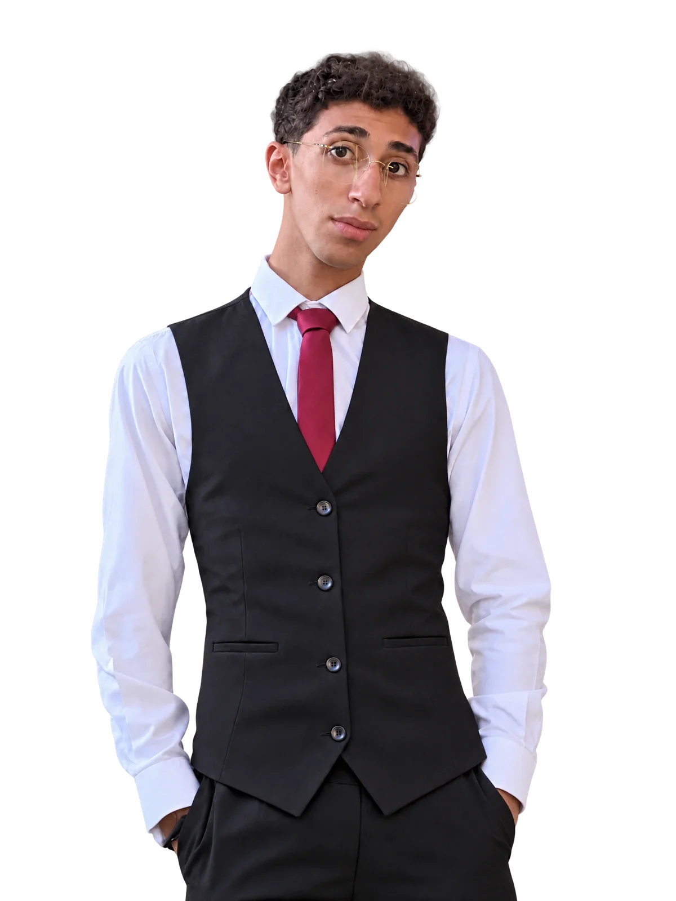

◈THESEIFDEV / 侍 ENGINEER
OPEN TO REMOTE
SENIOR FULL STACK DEVELOPER
SEIFAYMAN
テクノロジーで、より良い未来をつくる。
I build production web, desktop and AI products—from typed interfaces to APIs and data models.
5+ YEARS BUILDINGWEB / AI / IOTALEXANDRIA, EGYPT

サムライ
$build --design --ship● LIVE